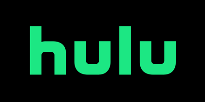

烂番茄网站94部HULU评分最高剧集
19数科 姜力菲
Hulu是由NBC环球、新闻集团以及迪士尼联合投资的视频网站。Hulu的目标是帮助用户在任意时刻、地点及方式查找并欣赏专业的媒体内容。其内容包括电视剧、电影和剪辑，主要来自于超过200个内容提供商，包括福克斯、NBC、迪斯尼、ABC、华纳兄弟、米高梅公司、狮门公司和索尼等。
随着其2008年3月在美国的公开发布，Hulu已经被业界公认为最具前途的“在线体验电视的新途径”。
在知名影视评分网站“烂番茄”上，Hulu最受好评的剧集当属其于2021年发布的10集原创自制剧《公寓大楼里的谋杀案（Only Murders in the Building）》
这部设定在纽约的都市犯罪类喜剧在烂番茄上收获了100%的观众好评认证，截至目前，这部剧已经斩获了第79届金球奖电视类最佳音喜类剧集、第28届美国演员工会奖喜剧类剧集最佳群戏、第74届美国编剧工会奖喜剧类剧集最佳剧本、第12届美国评论家选择电视奖喜剧类最佳剧集等多项提名，并将在今年夏天继续对第74届黄金时段艾美奖喜剧类最佳剧集发起冲击。
除此之外，Hulu已经基本确定了今年将对艾美奖最佳限定类剧集发起冲击的阵容：《成瘾剂量（Dopesick）》、《帕姆与汤米（Pam and Tommy）》、《辍学生（The Dropout）》、《来自普赖恩维尔的女孩（The girl from Plainville）》、《坎迪（Candy）》、《聊天记录（Conversation with Friends）》